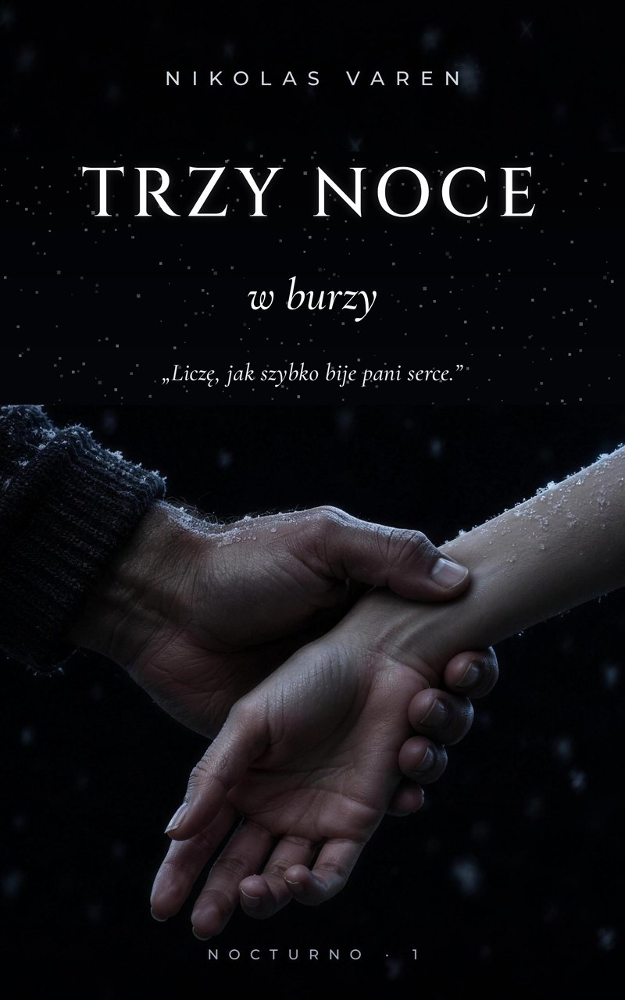

„Co pan robi?”
„Liczę, jak szybko bije pani serce.”
Dziennikarka Tereza od pięciu miesięcy szuka właściciela tajnego praskiego klubu Nocturno. Każdy o nim szepcze, nikt go nigdy nie widział. Anonimowy telefon prowadzi ją do pensjonatu na Szumawie. Tyle że po drodze zatrzymuje ją śnieżna burza, a jedyne światło w lesie pali się w domu obcego mężczyzny. Nie wie, kim on jest.
A on nie może odkryć, po co przyjechała.
Jedyne zamknięte drzwi w domu. I jedyne, o których Tereza myśli przez całą noc.
Jedyne słowo, które w jego domu ma większą moc niż on. Pytanie, czy Tereza w ogóle zechce je wypowiedzieć.
Tylko że Tereza kłamie od pierwszej minuty. O tym, kim jest. I o tym, dlaczego zapukała akurat do niego.
Którą z nich złamała?
— Proszę mi podać rękę.
— Po co?
— Bo panią o to poprosiłem.
Chwilę się wahała. Potem mu ją podała.
Wziął ją w dłoń i obrócił wnętrzem do góry, powoli, jakby przewracał stronę w książce, której nie chce uszkodzić. Dwa palce położył jej na wewnętrznej stronie nadgarstka, tam, gdzie skóra była najcieńsza i gdzie pod nią prześwitywały na niebiesko żyłki. Drugą ręką podciągnął rękaw swetra i spojrzał na zegarek.
Tereza zesztywniała.
— Co pan robi? — szepnęła.
— Liczę — powiedział spokojnie.
— Co pan liczy?
— Jak szybko bije pani serce. — Nie odrywał oczu od tarczy. — Po takim spacerze w śniegu trzeba to sprawdzić.
Liczył. Tereza czuła jego palce na nadgarstku, spokojne i ciepłe, i czuła, jak pod nimi wali jej tętno. Szybciej. Coraz szybciej. Jakby próbowało ją zdradzić.
Trwało to piętnaście sekund. Może dwadzieścia. Terezie wydało się to wiecznością.
— I? — zapytała.
Podniósł wzrok znad zegarka i spojrzał na nią.
— Jak na osobę, która dwie godziny temu o mało nie zamarzła — powiedział cicho — jakoś szybko bije pani serce.
Ta historia, to jak bardzo jest psychologiczna i jak niewiarygodnie te dwa rozdziały mnie wciągnęły. Natychmiast potrzebuję więcej.
To jest naprawdę świetne. Ja tę książkę po prostu muszę mieć, bo kocham Szumawę, a do tego jeszcze ta historia.
Trzymające w napięciu, podniecające, już nie mogę się doczekać, aż przeczytam całość.
Prawdziwe recenzje czytelniczek, które pobrały fragment. Opublikowane za ich zgodą.

Wyślemy Ci je od razu e-mailem, jako PDF i EPUB.
Zmysłowy romans dla dorosłych (18+). Fragment i książkę dostaniesz jako PDF i EPUB. Przeczytasz je w telefonie, na tablecie, na komputerze i w czytniku. Książka ukazuje się 1 listopada 2026.